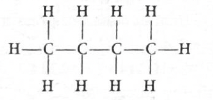
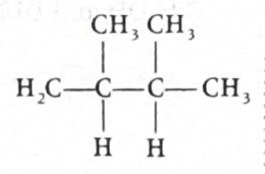
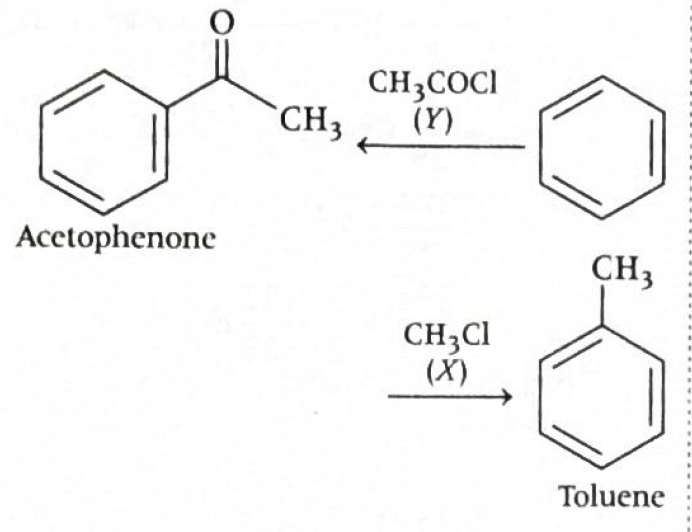
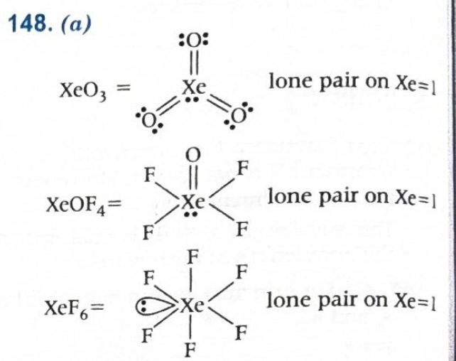

Answer: \((c)\ 1.5\ \text{Å}\)
Solution:
The metal crystallises in a face centred cubic \((\mathrm{fcc})\) lattice. In an \(\mathrm{fcc}\) unit cell, atoms touch each other along the face diagonal.
For a cube, face diagonal \(d\) is:
\(d = a\sqrt{2}\)
In \(\mathrm{fcc}\), the face diagonal passes through:
So, in \(\mathrm{fcc}\):
\(4r = a\sqrt{2}\)
Therefore:
\(r = \dfrac{a\sqrt{2}}{4}\)
Given:
\(a = 4.242\) Å
So:
\(r = \dfrac{4.242 \times \sqrt{2}}{4}\) Å
Using \(\sqrt{2} \approx 1.414\),
\(r \approx \dfrac{4.242 \times 1.414}{4}\) Å
\(r \approx \dfrac{5.999}{4}\) Å
\(r \approx 1.5\) Å
Therefore:
\(\boxed{1.5\ \text{Å}}\)
Why this method works:
\(a\sqrt{2}\)
\(4r\)
\(a\sqrt{2} = 4r\)
JEE / NCERT takeaway:
\(a = 2r\)
\(\sqrt{3}\,a = 4r\)
\(\sqrt{2}\,a = 4r\)
Helpful diagram:
Face diagonal in fcc:
Corner atom Face-centred atom Corner atom
●------------------●------------------●
r 2r r
So total touching length on face diagonal = 4r
But face diagonal of cube = \(a\sqrt{2}\)
Hence, \(a\sqrt{2} = 4r\)
1-minute solving trick:
\(r = \dfrac{a\sqrt{2}}{4}\)
\(r \approx 0.3535\,a\)
\(r \approx 0.3535 \times 4.242 \approx 1.5\)
More intuitive shortcut:
\(4r = a\sqrt{2}\)
\(r = \dfrac{a}{2\sqrt{2}}\)
\(r \approx \dfrac{4.242}{2.828} = 1.5\)
Common mistakes to avoid:
Chapter / Topic / Subtopic:
Final exam-style answer:
In \(\mathrm{fcc}\) lattice, atoms touch along the face diagonal.
Therefore:
\(a\sqrt{2} = 4r\)
So:
\(r = \dfrac{a\sqrt{2}}{4}\)
Given: \(a = 4.242\) Å
Hence:
\(r = \dfrac{4.242 \times \sqrt{2}}{4}\) Å
\(\approx \dfrac{4.242 \times 1.414}{4}\) Å
\(\approx \dfrac{5.999}{4}\) Å
\(\approx 1.5\) Å
\(\boxed{(c)\ 1.5\ \text{Å}}\)
Quick cheatsheet:
\(a = 2r\)
\(\sqrt{3}\,a = 4r\)
\(\sqrt{2}\,a = 4r\)
\(a\sqrt{2}\)
\(a\sqrt{3}\)
\(r = \dfrac{a\sqrt{2}}{4} = \dfrac{a}{2\sqrt{2}}\)
\(\mathrm{sc}=1,\quad \mathrm{bcc}=2,\quad \mathrm{fcc}=4\)
